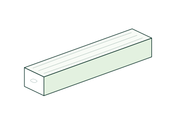

Lemn bun.
Oameni pe care
te bazezi.
Un acoperiș de refăcut. O casă în lucru. Un șantier care merge mai departe. La Lemne furnizăm materialul lemnos și discutăm detaliile care fac comanda să se potrivească lucrării tale.


În Sânnicolau Mare.
Clienți diferiți.
Aceeași grijă.
Descoperă produseleAm lucrat cu clienți mici și mari. În spatele fiecărui necesar este o lucrare care trebuie dusă mai departe.
Poate cumperi lemn pentru prima dată sau ai de înlocuit câteva elemente. Poți începe cu lista de la proiectant ori cu întrebările pe care le ai despre produse. Lămurim împreună ce variante sunt disponibile.
Un necesar mai mare cere atenție la cantități, dimensiuni și livrare. Discutăm cerințele lucrării și pregătim oferta în funcție de ele, inclusiv condițiile pentru discount la volum.

La o comandă de lemn,
detaliile se măsoară.
Pe o listă de materiale, 5 × 15 și 10 × 15 cm înseamnă produse diferite. Confirmăm secțiunea, lungimea și cantitatea. Pentru elementele de structură, pornim de la dimensiunile cerute de proiectant sau arhitect.
Bradul și molidul sunt disponibile uscate natural sau verzi. Discutăm varianta cerută de lucrare și dimensiunile pe care le putem furniza. Pentru grinzi, acestea pot ajunge până la 10 m lungime, inclusiv la comandă.
Documentele se discută de la început.
Dacă proiectul cere certificat de calitate sau declarație de conformitate, spune-ne înainte de comandă. Le putem oferi la cerere, în funcție de produs și lot.
Din vestul țării.
Până la proiectul tău.
Înainte să decizi, merită să ai toate datele: ce material primești, ce volum îți trebuie și cum ajunge la lucrare. Le punem în aceeași discuție, ca prețul să fie legat de o comandă clară.
Calculăm lemnul la metru cub, iar transportul după cantitate și distanță. Putem livra oriunde în România și, pentru anumite comenzi, putem oferi discount sau transport gratuit.
Pregătește o cerere de ofertă